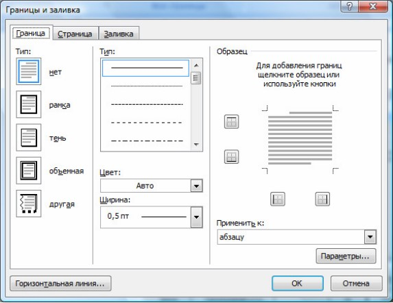
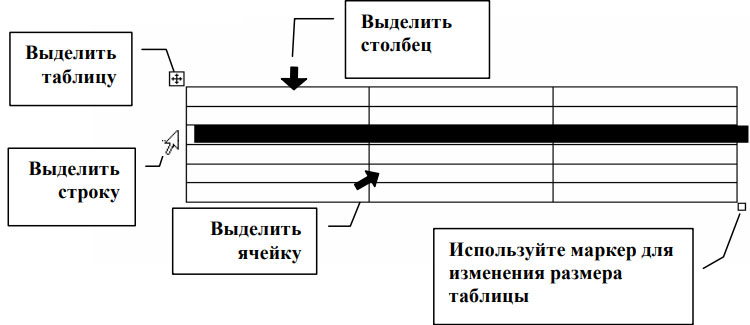

Работа с таблицами
Границы и заливка для текста и страниц
Для привлечения внимания к фрагменту текста, абзацу или ко всей страницы вы можете выделить их с помощью границы или заливки, создать которые можно, используя на вкладке Разметка страницы группу Фон страницы.
Создание границ и заливки для текста с помощью диалогового окна Границы и заливка
Границы и заливку можно создать с помощью меню Границы и заливка (Borders and Shading). При использовании вам предоставляется возможности по форматированию документа.
Создание границ
- Поместите курсор в тот абзац, для которого хотите задать границы.
- Выберите вкладку Разметка страницы, в группе Фон страницы нажмите Границы страниц. Откроется Границы и заливка (Borders and Shading)
- Перейдите на вкладку Граница (Borders)
- Выберите тип границы. Если вы выберите тип границы Другая…(Custom…), вы сможете задать различные по виду границы абзаца.
- Выберите тип линии, ее цвет и ширину (если доступно).
- В поле Образец (Preview) примените/отмените настроенные линии к нужным границам с помощью кнопок вокруг образца или щелкая ЛКМ в соответствующем месте на картинке в поле Образец (Preview).
- В поле Применить к (Apply to) укажите для чего будет задана граница.
- Нажмите OK.

Рис. Границы и заливка
Создание заливки
- Поместите курсор в тот абзац, для которого хотите задать заливку.
- Выберите вкладку Разметка страницы, в группе Фон страницы нажмите Границы страниц.
- Выберите из палитры цвет заливки.
- Выберите тип узора и его цвет
- Нажмите OK.
Работа с таблицами
Таблица состоит из строк и столбцов, на пересечении которых находятся ячейки, которые могут быть заполнены текстом и графикой.
Вы можете использовать таблицу для организованного размещения текста и графики на странице, а также производить сортировку или выполнять простые вычисления над данными, размещенными в таблице.
Все данные заносятся в ячейки таблицы. В ячейку таблицы вы можете добавить другую таблицу, т.е. работать с вложенными таблицами. Внутри каждой ячейки вы можете задать свои способы форматирования, текста и/или абзаца. Когда вы вводите информацию в ячейку, высота строки и/или ширина столбца увеличивается автоматически. При удалении информации, высота строки и/или ширина столбца будет уменьшаться автоматически.
Таблица в программе MS Word является плавающей, т.е. вы можете расположить ее в любом месте в документе. Таблица может быть длинной, в том числе размещаться на нескольких страницах.
После добавления таблицы в документ на ленте появляются две новые вкладки: Конструктор и Макет, содержащие команды для работы с таблицей.
Создание таблицы
Таблица может быть простой или сложной. В простой таблице количество ячеек во всех столбцах и строчках одинаковое. Сложная таблица содержит в себе объединенные ячейки.
Для создания таблицы используйте на вкладке Вставка в группе Таблицы кнопку Таблица. После нажатия на нее вы можете для добавления таблицы выбрать один из следующих путей:
- макет Вставка таблицы – для быстрой вставки таблицы;
- кнопку Вставить таблицу… - откроется диалоговое окно Вставка таблицы;
- кнопку Нарисовать таблицу – для ручного рисования «карандашом» таблицы;
- кнопку Экспресс-таблицы – для применения встроенных форматов таблицы.
Вы можете создать простую таблицу, которую в последующем можете перестроить в сложную. При помощи карандаша вы сразу можете создать таблицу сложной структуры.
При создании таблицы не обязательно использовать или устанавливать все параметры сразу. Достаточно создать одну ячейку таблицы, которую в последующем можно увеличить до таблицы нужной структуры.
Выделение элементов таблицы
Прежде чем использовать команды редактирования или форматирования таблицы, необходимо выделить ячейки, строки или столбцы, к которым эти команды будут применяться.

Рис. Выделение элементов таблицы
Форматирование таблицы
Для форматирования текста, размещенного в элементе таблицы, необходимо применить форматирование к этому элементу. Вы можете сначала задать параметры форматирования для элемента таблицы, а потом впечатать текст. Либо вы можете определить параметры форматирования для элемента таблицы, в котором уже есть содержимое, в этом случае нужно выделить элемент таблицы, для которой будете задавать параметры форматирования.